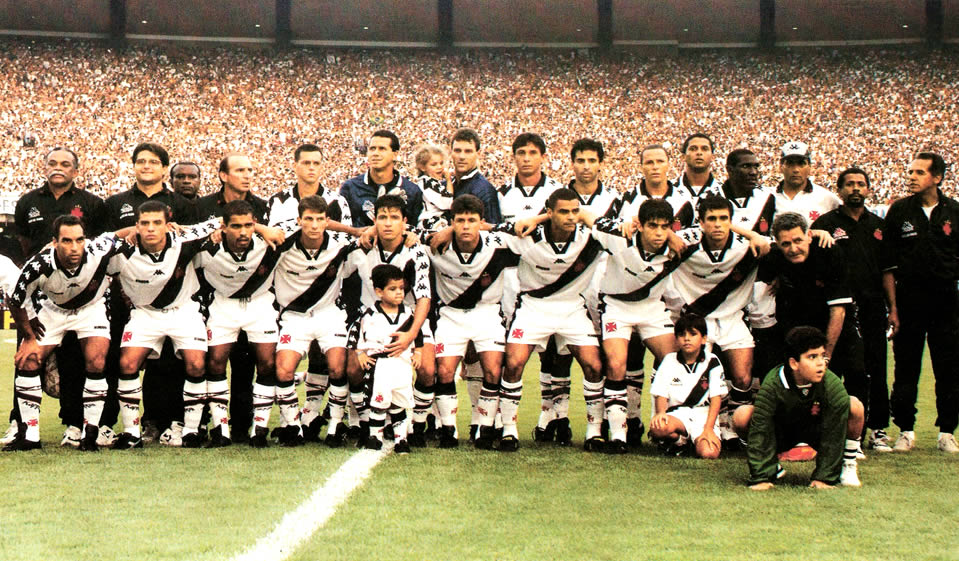

História do Vasco da Gama
O Club de Regatas Vasco da Gama foi fundado em 21 de agosto de 1898, por um grupo de remadores portugueses no Rio de Janeiro. Originalmente voltado para o esporte náutico, o clube adotou o futebol em 1915 e rapidamente ganhou destaque.
Conhecido por sua luta contra o racismo e pela inclusão de atletas negros e pobres, o Vasco tem uma trajetória marcada por conquistas históricas e posicionamentos firmes. Um dos marcos mais famosos foi a "Resposta Histórica" em 1924, quando se recusou a excluir jogadores negros.
Ao longo das décadas, o Vasco conquistou títulos importantes, como o Campeonato Brasileiro, a Copa do Brasil e a tão sonhada Copa Libertadores em 1998.